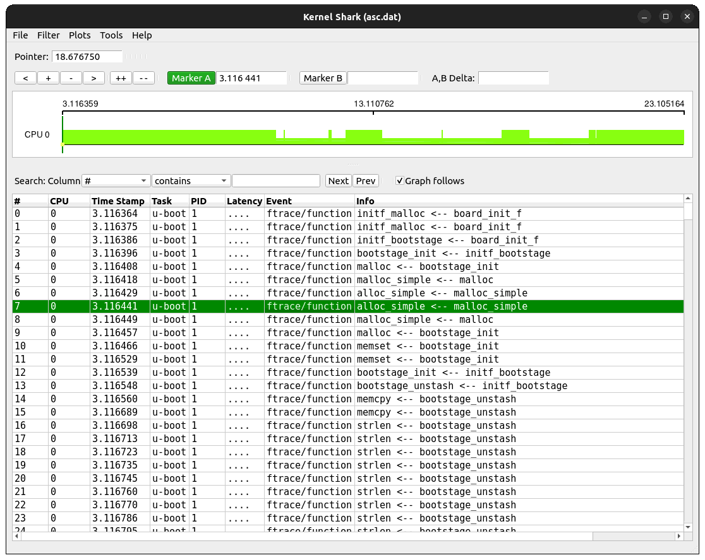
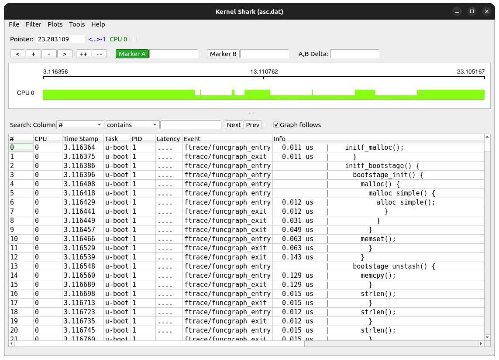
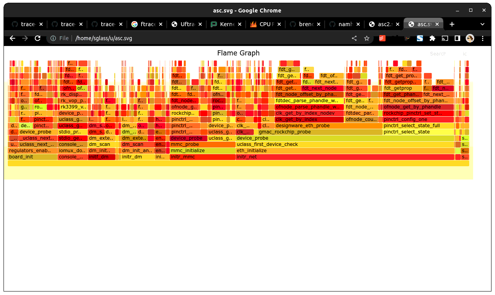
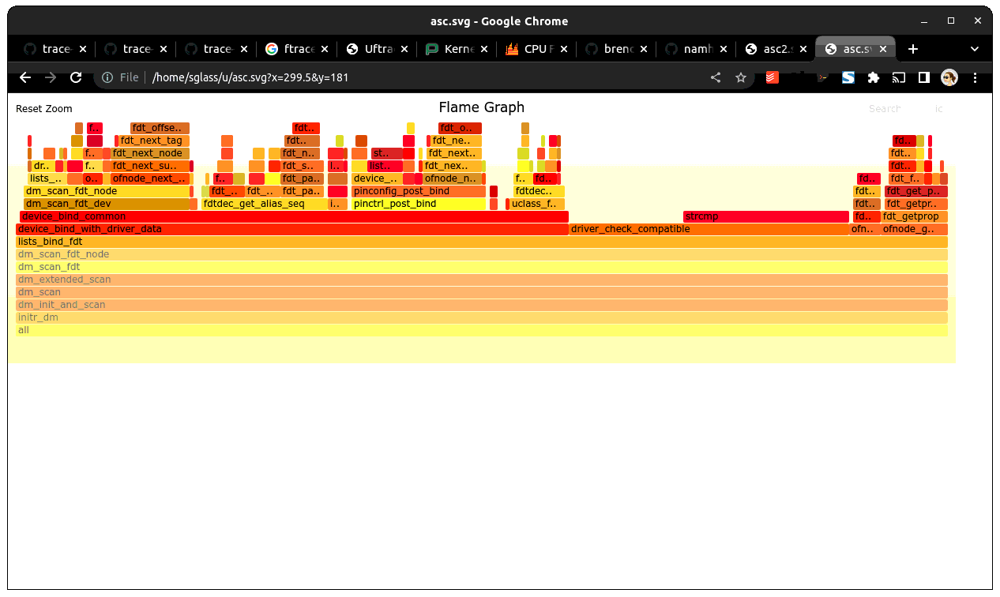
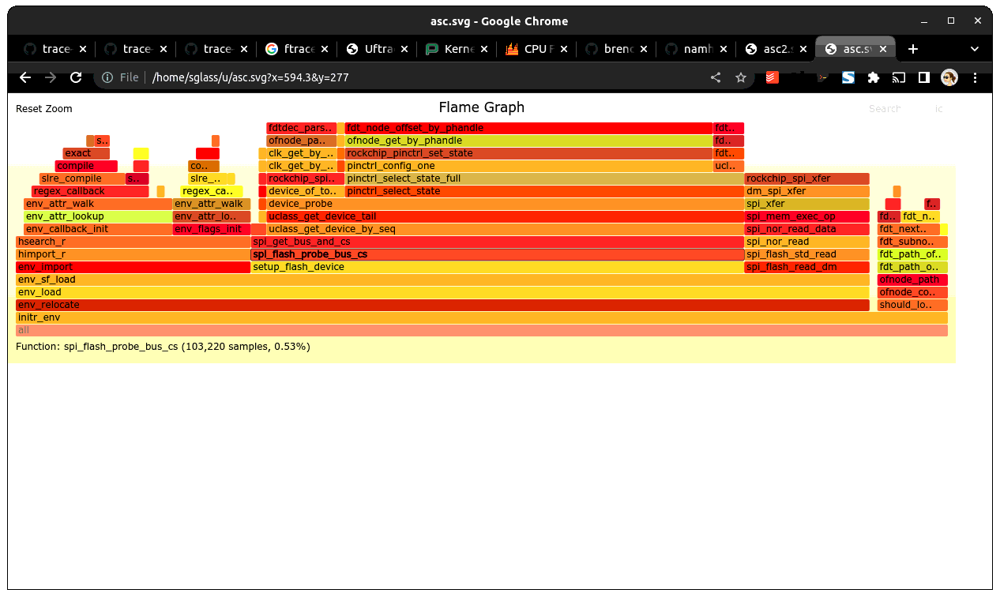

Tracing in U-Boot¶
U-Boot supports a simple tracing feature which allows a record of execution to be collected and sent to a host machine for analysis. At present the main use for this is to profile boot time.
Overview¶
The trace feature uses GCC’s instrument-functions feature to trace all function entry/exit points. These are then recorded in a memory buffer. The memory buffer can be saved to the host over a network link using tftpput or by writing to an attached storage device such as MMC.
On the host, the file is first converted with a tool called ‘proftool’, which extracts useful information from it. The resulting trace output resembles that emitted by Linux’s ftrace feature, so can be visually displayed by kernelshark (see kernelshark) and used with ‘trace-cmd report’ (see trace_cmd).
It is also possible to produce a flame graph for use with flamegraph.pl (see flamegraph_pl).
Quick-start using Sandbox¶
Sandbox is a build of U-Boot that can run under Linux so it is a convenient way of trying out tracing before you use it on your actual board. To do this, follow these steps:
Add the following to config/sandbox_defconfig:
CONFIG_TRACE=y
Build sandbox U-Boot with tracing enabled:
$ make FTRACE=1 O=sandbox sandbox_config
$ make FTRACE=1 O=sandbox
Run sandbox, wait for a bit of trace information to appear, and then capture a trace:
$ ./sandbox/u-boot
U-Boot 2013.04-rc2-00100-ga72fcef (Apr 17 2013 - 19:25:24)
DRAM: 128 MiB
trace: enabled
Using default environment
In: serial
Out: serial
Err: serial
=>trace stats
671,406 function sites
69,712 function calls
0 untracked function calls
73,373 traced function calls
16 maximum observed call depth
15 call depth limit
66,491 calls not traced due to depth
=>trace stats
671,406 function sites
1,279,450 function calls
0 untracked function calls
950,490 traced function calls (333217 dropped due to overflow)
16 maximum observed call depth
15 call depth limit
1,275,767 calls not traced due to depth
=>trace calls 1000000 e00000
Call list dumped to 00000000, size 0xae0a40
=>print
baudrate=115200
profbase=0
profoffset=ae0a40
profsize=e00000
stderr=serial
stdin=serial
stdout=serial
Environment size: 117/8188 bytes
=>host save hostfs - 1000000 trace ${profoffset}
11405888 bytes written in 10 ms (1.1 GiB/s)
=>reset
Then run proftool to convert the trace information to ftrace format
$ ./sandbox/tools/proftool -m sandbox/System.map -t trace dump-ftrace -o trace.dat
Finally run kernelshark to display it (note it only works with .dat files!):
$ kernelshark trace.dat
Using this tool you can view the trace records and see the timestamp for each function.
{kind=link}

To see the records on the console, use trace-cmd:
$ trace-cmd report trace.dat | less
cpus=1
u-boot-1 [000] 3.116364: function: initf_malloc
u-boot-1 [000] 3.116375: function: initf_malloc
u-boot-1 [000] 3.116386: function: initf_bootstage
u-boot-1 [000] 3.116396: function: bootstage_init
u-boot-1 [000] 3.116408: function: malloc
u-boot-1 [000] 3.116418: function: malloc_simple
u-boot-1 [000] 3.116429: function: alloc_simple
u-boot-1 [000] 3.116441: function: alloc_simple
u-boot-1 [000] 3.116449: function: malloc_simple
u-boot-1 [000] 3.116457: function: malloc
Note that pytimechart is obsolete so cannot be used anymore.
There is a -f option available to select a function graph:
$ ./sandbox/tools/proftool -m sandbox/System.map -t trace -f funcgraph dump-ftrace -o trace.dat
Again, you can use kernelshark or trace-cmd to look at the output. In this case you will see the time taken by each function shown against its exit record.
{kind=link}

$ trace-cmd report trace.dat | less
cpus=1
u-boot-1 [000] 3.116364: funcgraph_entry: 0.011 us | initf_malloc();
u-boot-1 [000] 3.116386: funcgraph_entry: | initf_bootstage() {
u-boot-1 [000] 3.116396: funcgraph_entry: | bootstage_init() {
u-boot-1 [000] 3.116408: funcgraph_entry: | malloc() {
u-boot-1 [000] 3.116418: funcgraph_entry: | malloc_simple() {
u-boot-1 [000] 3.116429: funcgraph_entry: 0.012 us | alloc_simple();
u-boot-1 [000] 3.116449: funcgraph_exit: 0.031 us | }
u-boot-1 [000] 3.116457: funcgraph_exit: 0.049 us | }
u-boot-1 [000] 3.116466: funcgraph_entry: 0.063 us | memset();
u-boot-1 [000] 3.116539: funcgraph_exit: 0.143 us | }
Flame graph¶
Some simple flame graph options are available as well, using the dump-flamegraph command:
$ ./sandbox/tools/proftool -m sandbox/System.map -t trace dump-flamegraph -o trace.fg
$ flamegraph.pl trace.fg >trace.svg
You can load the .svg file into a viewer. If you use Chrome (and some other programs) you can click around and zoom in and out.
{kind=link}

{kind=link}

A timing variant is also available, which gives an idea of how much time is spend in each call stack:
$ ./sandbox/tools/proftool -m sandbox/System.map -t trace dump-flamegraph -f timing -o trace.fg
$ flamegraph.pl trace.fg >trace.svg
Note that trace collection does slow down execution so the timings will be inflated. They should be used to guide optimisation. For accurate boot timings, use bootstage.
{kind=link}

CONFIG Options¶
- CONFIG_TRACE
Enables the trace feature in U-Boot.
- CONFIG_CMD_TRACE
Enables the trace command.
- CONFIG_TRACE_BUFFER_SIZE
Size of trace buffer to allocate for U-Boot. This buffer is used after relocation, as a place to put function tracing information. The address of the buffer is determined by the relocation code.
- CONFIG_TRACE_EARLY
Define this to start tracing early, before relocation.
- CONFIG_TRACE_EARLY_SIZE
Size of ‘early’ trace buffer. Before U-Boot has relocated it doesn’t have a proper trace buffer. On many boards you can define an area of memory to use for the trace buffer until the ‘real’ trace buffer is available after relocation. The contents of this buffer are then copied to the real buffer.
- CONFIG_TRACE_EARLY_ADDR
Address of early trace buffer
- CONFIG_TRACE_CALL_DEPTH_LIMIT
Sets the limit on trace call-depth. For a broad view, 10 is typically sufficient. Setting this too large creates enormous traces and distorts the overall timing considerable.
Building U-Boot with Tracing Enabled¶
Pass ‘FTRACE=1’ to the U-Boot Makefile to actually instrument the code. This is kept as a separate option so that it is easy to enable/disable instrumenting from the command line instead of having to change board config files.
Board requirements¶
Trace data collection relies on a microsecond timer, accessed through timer_get_us(). So the first thing you should do is make sure that this produces sensible results for your board. Suitable sources for this timer include high resolution timers, PWMs or profile timers if available. Most modern SOCs have a suitable timer for this.
See add_ftrace() for where timer_get_us() is called. The notrace attribute must be used on each function called by timer_get_us() since recursive calls to add_ftrace() will cause a fault:
trace: recursion detected, disabling
You cannot use driver model to obtain the microsecond timer, since tracing may be enabled before driver model is set up. Instead, provide a low-level function which accesses the timer, setting it up if needed.
Collecting Trace Data¶
When you run U-Boot on your board it will collect trace data up to the limit of the trace buffer size you have specified. Once that is exhausted no more data will be collected.
Collecting trace data affects execution time and performance. You will notice this particularly with trivial functions - the overhead of recording their execution may even exceed their normal execution time. In practice this doesn’t matter much so long as you are aware of the effect. Once you have done your optimizations, turn off tracing before doing end-to-end timing using bootstage.
The best time to start tracing is right at the beginning of U-Boot. The best time to stop tracing is right at the end. In practice it is hard to achieve these ideals.
This implementation enables tracing early in board_init_r(), or board_init_f() when TRACE_EARLY is enabled. This means that it captures most of the board init process, missing only the early architecture-specific init. However, it also misses the entire SPL stage if there is one. At present tracing is not supported in SPL.
U-Boot typically ends with a ‘bootm’ command which loads and runs an OS. There is useful trace data in the execution of that bootm command. Therefore this implementation provides a way to collect trace data after bootm has finished processing, but just before it jumps to the OS. In practical terms, U-Boot runs the ‘fakegocmd’ environment variable at this point. This variable should have a short script which collects the trace data and writes it somewhere.
Controlling the trace¶
U-Boot provides a command-line interface to the trace system for controlling tracing and accessing the trace data. See trace command.
Environment Variables¶
The following are used:
- profbase
Base address of trace output buffer
- profoffset
Offset of first unwritten byte in trace output buffer
- profsize
Size of trace output buffer
All of these are set by the ‘trace calls’ command.
These variables keep track of the amount of data written to the trace output buffer by the ‘trace’ command. The trace commands which write data to the output buffer can use these to specify the buffer to write to, and update profoffset each time. This allows successive commands to append data to the same buffer, for example:
=> trace funclist 10000 e00000
=> trace calls
(the latter command appends more data to the buffer).
- fakegocmd
Specifies commands to run just before booting the OS. This is a useful time to write the trace data to the host for processing.
Writing Out Trace Data¶
Once the trace data is in an output buffer in memory there are various ways to transmit it to the host. Notably you can use tftput to send the data over a network link:
fakegocmd=trace pause; usb start; set autoload n; bootp;
trace calls 10000000 1000000;
tftpput ${profbase} ${profoffset} 192.168.1.4:/tftpboot/calls
This starts up USB (to talk to an attached USB Ethernet dongle), writes a trace log to address 10000000 and sends it to a host machine using TFTP. After this, U-Boot will boot the OS normally, albeit a little later.
For a filesystem you may do something like:
trace calls 10000000 1000000;
save mmc 1:1 10000000 /trace ${profoffset}
The trace buffer format is internal to the trace system. It consists of a header, a call count for each function site, followed by a list of trace records, once for each function call.
Converting Trace Output Data (proftool)¶
The trace output data is kept in a binary format which is not documented here. See the trace.h header file if you are interested. To convert it into something useful, you can use proftool.
This tool must be given the U-Boot map file and the trace data received from running that U-Boot. It produces a binary output file.
It is also possible to provide a configuration file to indicate which functions should be included or dropped during conversion. This file consists of lines like:
include-func <regex>
exclude-func <regex>
where <regex> is a regular expression matched against function names. It allows some functions to be dropped from the trace when producing ftrace records.
Options:
- -c <config_file>
Specify the optional configuration file, to control which functions are included in the output.
- -f <format>
Specifies the format to use (see below)
- -m <map_file>
Specify U-Boot map file (System.map)
- -o <output file>
Specify the output filename
- -t <trace_file>
Specify trace file, the data saved from U-Boot
- -v <0-4>
Specify the verbosity, where 0 is the minimum and 4 is for debugging.
Commands:
- dump-ftrace:
Write a binary dump of the file in Linux ftrace format. Two options are available:
- function
write function-call records (caller/callee)
- funcgraph
write function entry/exit records (graph)
This format can be used with kernelshark and trace_cmd.
- dump-flamegraph
Write a list of stack records useful for producing a flame graph. Two options are available:
- calls
create a flamegraph of stack frames
- timing
create a flamegraph of microseconds for each stack frame
This format can be used with flamegraph_pl.
Viewing the Trace Data¶
You can use kernelshark for a GUI, but note that version 2.0.x was broken. If you have that version you could try building it from source.
The file must have a .dat extension or it is ignored. The program has terse user interface but is very convenient for viewing U-Boot profile information.
Also available is trace_cmd which provides a command-line interface.
Workflow Suggestions¶
The following suggestions may be helpful if you are trying to reduce boot time:
Enable CONFIG_BOOTSTAGE and CONFIG_BOOTSTAGE_REPORT. This should get you are helpful overall snapshot of the boot time.
Build U-Boot with tracing and run it. Note the difference in boot time (it is common for tracing to add 10% to the time)
Collect the trace information as described above. Use this to find where all the time is being spent.
Take a look at that code and see if you can optimize it. Perhaps it is possible to speed up the initialization of a device, or remove an unused feature.
Rebuild, run and collect again. Compare your results.
Keep going until you run out of steam, or your boot is fast enough.
Configuring Trace¶
There are a few parameters in the code that you may want to consider. There is a function call depth limit (set to 15 by default). When the stack depth goes above this then no tracing information is recorded. The maximum depth reached is recorded and displayed by the ‘trace stats’ command. While it might be tempting to set the depth limit quite high, this can dramatically increase the size of the trace output as well as the execution time.
Future Work¶
Tracing could be a little tidier in some areas, for example providing run-time configuration options for trace.
Some other features that might be useful:
Trace filter to select which functions are recorded
Sample-based profiling using a timer interrupt
Better control over trace depth
Compression of trace information